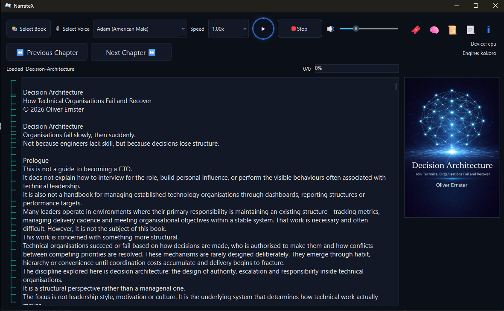
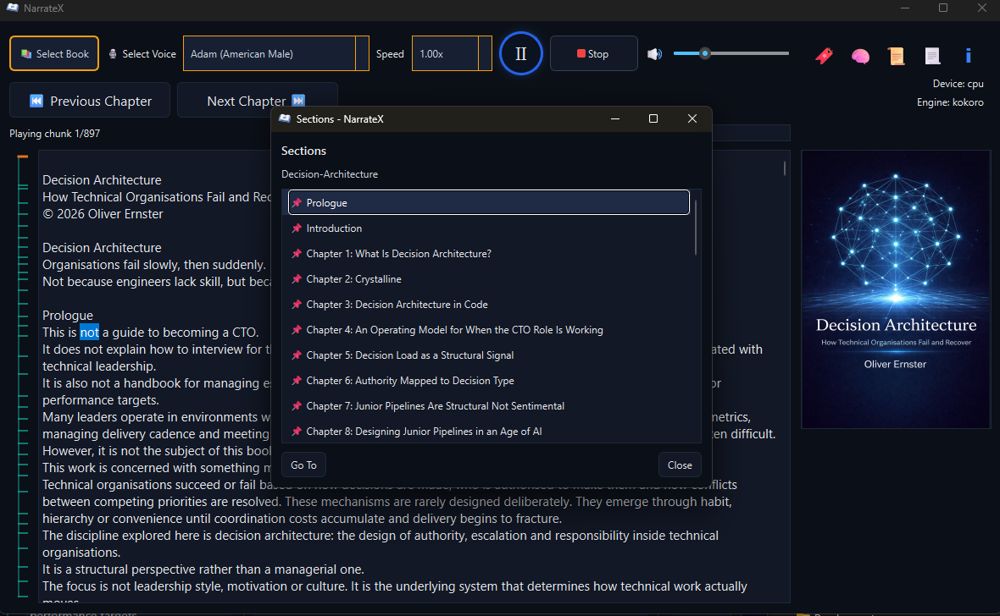

NarrateX
A structured desktop reading system that converts books and documents into continuous audio playback.
Built for long-form listening. Runs locally. Behaves predictably.
Local execution. Deterministic playback. No cloud dependency.
Core behaviour
- Playback follows document structure rather than file order
- Navigation is derived from headings and bookmarks
- Non-content sections are excluded automatically
- Navigation loads immediately and processes in the background
- Playback position is consistent across sessions
Why this exists
Most tools treat documents as flat text streams.
This leads to broken navigation, skipped sections and inconsistent playback.
NarrateX treats books as structured systems.
Structure is preserved, navigation is derived from it and playback follows it.


Supported formats
- EPUB
- PDF
- Plain text
- Kindle formats via Calibre conversion
Execution model
Text is processed into structured chunks.
Audio is generated and streamed continuously.
Playback begins immediately and continues without interruption.
Everything runs locally which keeps the system fast, predictable and private.
Created by Oliver Ernster